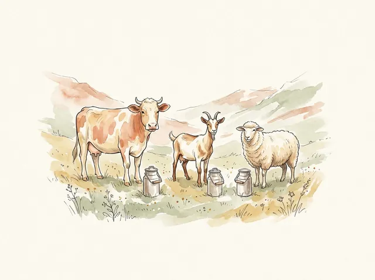
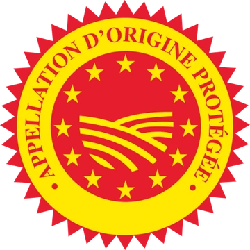

Frmages
Les 47 AOP de France
Du lait au plateau : la fabrication, les fromages AOP de chaque région, les grands fromages étrangers, et des quiz pour réviser.
- 47 fromages AOP
- 6 familles de pâtes
- 3 laits
- 27 kg par Français et par an
Cours de M. Hermand · Lycée Ambroise Croizat, Moûtiers
La fabrication
Un fromage est un produit issu de la coagulation du lait. La matière première utilisée est donc le lait.
Le fromage en France
Quelques chiffres
Nombre d’AOP et consommation d’après le CNIEL (février 2026), production normande d’après Agreste Normandie (mai 2025).
La matière première
Les 3 laits
En France, les fromages AOP sont faits avec le lait de trois animaux. Touchez un lait pour voir ses fromages.

Le Brocciu (Corse) se fabrique au lait de brebis et/ou de chèvre.
Du lait au fromage
Les 5 étapes de l’élaboration
Faites glisser l’image ou utilisez les flèches.
Les familles
Les 6 familles de pâtes
Chaque fromage AOP appartient à l’une de ces six familles. Touchez une famille pour voir ses fromages.
Le signe officiel
AOP, ça veut dire quoi ?

Le fromage est produit, transformé et élaboré dans une zone géographique précise, avec un savoir-faire reconnu et un cahier des charges à respecter. Ce logo européen figure sur l’emballage.
Les AOP des régions
Touchez une région pour voir ses fromages AOP. Les régions sont dans l’ordre du cours.
Les régions hachurées n’ont pas de fromage AOP.
Les fromages étrangers
Huit grands fromages d’Europe à connaître pour conseiller un client. Touchez un fromage pour voir sa fiche.
Le glossaire
Les 47 fromages AOP et les 8 fromages étrangers. Cherchez un fromage, ou triez-les par lait, par pâte ou par région.
L’espace quiz
Choisissez un quiz. Les questions changent à chaque partie.
Mes trophées
Crédits photos
Les photos des fromages viennent de Wikimedia Commons, sous licences libres. Merci à leurs auteurs.